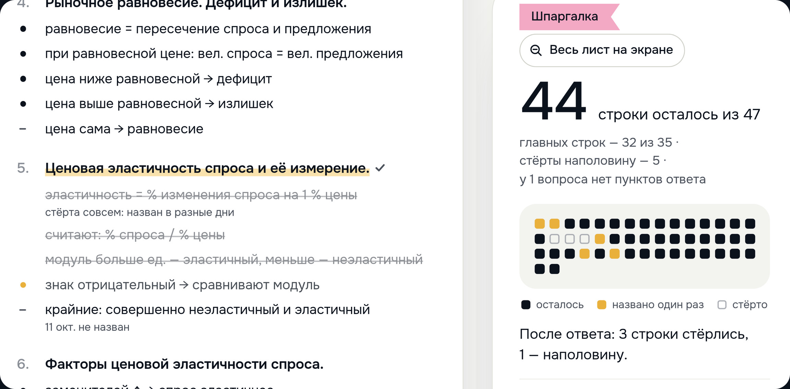

Представление блоков проекта
Строка исчезает, только когда её назвали
в два разных дня
в два разных дня

Строка осталась
пункт ещё не назван
Названа один раз
точка жёлтая
Названа снова
в другой день — стёрта
Забыта
строка вернулась
осталось 4 из 10
Шпаргалка показывает, что осталось выучить. У каждого вопроса есть строки — главные пункты ответа.
Назвал пункт — строка бледнеет. Назвал снова в другой день — строка стирается. Забыл — она возвращается. Так видно не сколько прочитано, а сколько осталось. Цель, с которой мы начали, — ноль строк к утру экзамена.
О записи: это пример экзамена на сайте, вчерашний ответ в нём задан заранее. Сегодняшний ответ называет те же пункты снова — три строки стираются, счётчик идёт с 47 до 44.